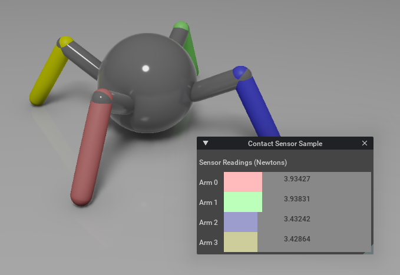

[isaacsim.sensors.experimental.physics] Isaac Sim Physics Sensor Simulation#
Version: 3.0.1
Overview#
The isaacsim.sensors.experimental.physics extension provides experimental physics-based sensors for Isaac Sim robotics applications. It offers five types of sensors — contact sensors for detecting collisions and forces, effort sensors for measuring joint torque and force, IMU sensors for capturing inertial measurements, joint state sensors for reading full articulation DOF state, and raycast sensors for emitting cast rays — with a runtime/authoring split that mirrors isaacsim.sensors.experimental.rtx.

Key Components#
Contact Sensor#
ContactSensor provides collision detection and force measurement capabilities with configurable thresholds and radius filtering. Pair it with the Contact authoring class to create a new prim, which automatically applies the necessary PhysxContactReportAPI to enable contact reporting.
from isaacsim.sensors.experimental.physics import Contact, ContactSensor
# Create the prim with the authoring class, then wrap with the runtime
sensor = ContactSensor(
Contact.create(
"/World/Robot/foot/contact_sensor",
min_threshold=1.0,
max_threshold=1000.0,
radius=0.05,
)
)
# Get current contact data
frame = sensor.get_data()
if frame["in_contact"]:
print(f"Contact force: {frame['force']}")
The sensor returns structured frame data including contact status, force magnitude, simulation time, and optional raw contact details when enabled via add_raw_contact_data_to_frame().
Effort Sensor#
EffortSensor measures joint effort (torque or force) from articulated bodies using the physics tensor API. It requires a valid articulation hierarchy and monitors specific degrees of freedom within joints.
from isaacsim.sensors.experimental.physics import EffortSensor
# Create sensor for a robot joint
sensor = EffortSensor("/World/Robot/joint_1")
# Read joint effort
reading = sensor.get_sensor_reading()
if reading.is_valid:
print(f"Joint torque: {reading.value}")
The sensor provides EffortSensorReading objects containing validity status, simulation time, and effort values. It supports configurable data buffering and dynamic DOF name updates.
IMU Sensor#
IMUSensor captures inertial measurements including linear acceleration, angular velocity, and orientation. Pair it with the IMU authoring class to create a new prim. It supports configurable rolling average filters for each measurement type to reduce noise.
from isaacsim.sensors.experimental.physics import IMU, IMUSensor
sensor = IMUSensor(
IMU.create(
"/World/Robot/body/imu",
linear_acceleration_filter_size=5,
)
)
# Get current IMU data
frame = sensor.get_data()
print(f"Linear acceleration: {frame['linear_acceleration']}")
print(f"Angular velocity: {frame['angular_velocity']}")
print(f"Orientation: {frame['orientation']}")
The sensor returns structured frame data with filtered measurements and supports gravity inclusion control for acceleration readings.
Joint State Sensor#
JointStateSensor reads positions, velocities, and efforts for every degree of freedom in an articulation in a single call, analogous to a ROS2 JointState message. It is backed by the C++ IJointStateSensor plugin and requires a valid articulation root prim.
from isaacsim.sensors.experimental.physics import JointStateSensor
# Create sensor for an articulation
sensor = JointStateSensor("/World/Robot")
# After playing the simulation, get full joint state
reading = sensor.get_sensor_reading()
if reading.is_valid:
for name, pos in zip(reading.dof_names, reading.positions):
print(f"{name}: {pos:.4f} rad")
The sensor returns JointStateSensorReading objects with validity, simulation time, DOF names, and arrays for positions (rad or m), velocities (rad/s or m/s), efforts (Nm or N), and per-DOF joint types. It supports pause/resume via the enabled property.
Raycast Sensor#
RaycastSensor emits a configurable pattern of physics rays from the sensor’s local frame and reports the closest hit on each ray. Pair it with the Raycast authoring class to create a new prim. It supports both static patterns and time-offset rotating sweeps.
from isaacsim.sensors.experimental.physics import Raycast, RaycastSensor
sensor = RaycastSensor(
Raycast.create(
"/World/Robot/body/raycast",
ray_origins=[[0, 0, 0]],
ray_directions=[[1, 0, 0]],
min_range=0.4,
max_range=100.0,
output_frame="WORLD",
)
)
frame = sensor.get_data()
print(f"Depths: {frame['depths']}")
Functionality#
Programmatic Sensor Creation#
Contact, IMU, and Raycast (the authoring classes) each provide a create() static method that handles USD prim creation, schema application, and attribute configuration. The returned authoring object is then wrapped with the matching runtime sensor (ContactSensor, IMUSensor, RaycastSensor) for data access. EffortSensor and JointStateSensor have no schema-bearing prim and are constructed directly from a path. This shape mirrors isaacsim.sensors.experimental.rtx, where create() similarly lives only on authoring classes.
Frame-Based Data Access#
All sensors implement a consistent frame-based data interface through get_data(), returning dictionaries with measurement values, timestamps, and validity information. For lower-level access, each sensor also exposes get_sensor_reading(), which returns the raw C++ sensor reading struct directly. This standardized approach simplifies sensor data processing across different sensor types.
Sensor Control#
Each sensor supports pause/resume functionality for runtime control of data collection, and provides methods for querying and modifying sensor-specific parameters like thresholds, filter sizes, and detection radius.
Integration#
The extension integrates with isaacsim.core.experimental.prims for prim management, using XformPrim and Articulation base classes. It leverages omni.timeline for simulation synchronization and requires the physics simulation framework for sensor data generation.
Enable Extension#
The extension can be enabled (if not already) in one of the following ways:
Define the next entry as an application argument from a terminal.
APP_SCRIPT.(sh|bat) --enable isaacsim.sensors.experimental.physics
Define the next entry under [dependencies] in an experience (.kit) file or an extension configuration (extension.toml) file.
[dependencies]
"isaacsim.sensors.experimental.physics" = {}
Open the Window > Extensions menu in a running application instance and search for isaacsim.sensors.experimental.physics.
Then, toggle the enable control button if it is not already active.
Python API#
Authoring (USD prim)
Authoring wrapper for an Isaac contact sensor USD prim. |
|
Authoring wrapper for an Isaac IMU sensor USD prim. |
|
Authoring wrapper for an Isaac raycast sensor USD prim. |
Sensors (runtime)
Runtime wrapper for an Isaac contact sensor with frame-based data access. |
|
Effort sensor reading data. |
|
Sensor for measuring joint effort (torque/force). |
|
Runtime wrapper for an Isaac IMU sensor with frame-based data access. |
|
Joint state sensor reading data for all DOFs of an articulation. |
|
Sensor for reading all DOF joint states from an articulation. |
|
Runtime wrapper for an Isaac raycast sensor with frame-based data access. |
Sensors#
- class ContactSensor(
- path: str | Contact,
Bases:
_PhysicsSensorRuntimeRuntime wrapper for an Isaac contact sensor with frame-based data access.
Wraps a
Contactauthoring object and owns the C++IContactSensorCarbonite interface. Exposesget_data()for a structured per-step dictionary,get_sensor_reading()for the cachedContactSensorReading, andget_raw_data()for raw contact records.- Parameters:
path – Either a string USD path to an existing IsaacContactSensor prim, or a pre-built
Contactauthoring object. To create a new prim, useContact.create().
Example:
from isaacsim.sensors.experimental.physics import Contact, ContactSensor sensor = ContactSensor( Contact.create( "/World/Robot/foot/contact_sensor", min_threshold=1.0, max_threshold=1000.0, radius=0.05, ) ) frame = sensor.get_data() if frame["in_contact"]: print(f"Contact force: {frame['force']}")
- add_raw_contact_data_to_frame() None#
Enable raw contact data in frame output.
After calling this,
get_data()will include a"contacts"list with detailed per-contact information.
- get_data() dict#
Get the current contact sensor data as a structured frame.
- Returns:
"in_contact": Whether contact is detected."force": Contact force magnitude."time": Simulation time of reading."physics_step": Physics step number."number_of_contacts": Number of contact points."contacts": Raw contact data if enabled viaadd_raw_contact_data_to_frame.
- Return type:
Frame data containing
- get_raw_data() list[dict[str, object]]#
Get raw contact data for the sensor’s parent body.
- Returns:
Raw contact dictionaries containing body0, body1, position, normal, impulse, time, and dt fields. Empty when the sensor is invalid.
- get_sensor_reading() ContactSensorReading#
Get the latest cached contact sensor reading.
- Returns:
Reading with contact state and force value. Returns an invalid reading if the sensor is disabled or the prim is invalid.
- on_physics_step(step_dt: float) None#
Called by
_SensorStepManagerafter each physics step.Reads the latest C++ sensor reading and caches it locally.
- Parameters:
step_dt – Duration of the physics step in seconds.
- remove_raw_contact_data_from_frame() None#
Disable raw contact data in frame output.
Removes the
"contacts"key from frame output to reduce overhead.
- property authoring_object: _PhysicsSensorAuthoring#
Authoring object encapsulated by this sensor.
- class EffortSensorReading(
- is_valid: bool = False,
- time: float = 0,
- value: float = 0,
Bases:
objectEffort sensor reading data.
- Parameters:
is_valid – Whether this reading contains valid data.
time – Simulation time when the reading was taken.
value – Effort (torque/force) value at the joint.
- class EffortSensor(path: str, enabled: bool = True)#
Bases:
_PhysicsSensorRuntimeBaseSensor for measuring joint effort (torque/force).
Owns the C++
IEffortSensorCarbonite interface directly and maintains a Python-side circular buffer of readings for historical access.- Parameters:
path – USD path to the joint, formatted as articulation_path/joint_name.
enabled – Whether the sensor is initially enabled.
Example
from isaacsim.sensors.experimental.physics import EffortSensor # Create sensor for a robot joint sensor = EffortSensor("/World/Robot/joint_1") # Read joint effort reading = sensor.get_sensor_reading() if reading.is_valid: print(f"Joint torque: {reading.value}")
- change_buffer_size(new_buffer_size: int) None#
Change the size of the sensor reading buffer.
- Parameters:
new_buffer_size – New buffer size (number of readings to store).
- get_data() dict#
Get the current effort sensor data as a structured frame.
- Returns:
"value": Effort (torque/force) value at the joint."is_valid": Whether the reading contains valid data."time": Simulation time of the reading."physics_step": Physics step number.
- Return type:
Frame data containing
- get_sensor_reading() EffortSensorReading#
Get the current effort sensor reading.
- Returns:
Reading with effort value and validity state.
- class IMUSensor(
- path: str | _PhysicsSensorAuthoring,
Bases:
_PhysicsSensorRuntimeRuntime wrapper for an Isaac IMU sensor with frame-based data access.
Wraps an
IMUauthoring object and owns the C++IImuSensorCarbonite interface. Exposesget_data()for a structured per-step dictionary andget_sensor_reading()for the raw C++ struct.- Parameters:
path – Either a string USD path to an existing IsaacImuSensor prim, or a pre-built
IMUauthoring object. To create a new prim, useIMU.create().
Example:
from isaacsim.sensors.experimental.physics import IMU, IMUSensor # Wrap an existing IsaacImuSensor prim sensor = IMUSensor("/World/Robot/body/imu") # Create a new sensor with custom parameters sensor = IMUSensor( IMU.create( "/World/Robot/body/imu", linear_acceleration_filter_size=5, ) ) frame = sensor.get_data() print(f"Linear acceleration: {frame['linear_acceleration']}")
- get_data(read_gravity: bool = True) dict#
Get the current IMU sensor data as a structured frame.
- Parameters:
read_gravity – If
True, include gravity in acceleration readings.- Returns:
"linear_acceleration": Linear acceleration[x, y, z]."angular_velocity": Angular velocity[x, y, z]."orientation": Orientation as[w, x, y, z]quaternion."time": Simulation time of reading."physics_step": Physics step number.
- Return type:
Frame data containing
- get_sensor_reading(read_gravity: bool = True) object#
Get the current IMU sensor reading as the raw C++ struct.
- Parameters:
read_gravity – Whether to include gravity in the reading.
- Returns:
The C++
ImuSensorReadingstruct directly. Access fields viareading.linear_acceleration_x/_y/_z,reading.angular_velocity_x/_y/_z, andreading.orientation_w/_x/_y/_z(no aggregateorientationaccessor — read the four scalar fields). For a[w, x, y, z]numpy array, useget_data()instead.
- on_physics_step(step_dt: float) None#
Called after each physics step. Override for custom per-step logic.
- Parameters:
step_dt – Physics step duration in seconds.
- property authoring_object: _PhysicsSensorAuthoring#
Authoring object encapsulated by this sensor.
- class JointStateSensorReading(
- is_valid: bool = False,
- time: float = 0.0,
- dof_names: list[str] | None = None,
- positions: ndarray | None = None,
- velocities: ndarray | None = None,
- efforts: ndarray | None = None,
- dof_types: ndarray | None = None,
- stage_meters_per_unit: float = 0.0,
Bases:
objectJoint state sensor reading data for all DOFs of an articulation.
- Parameters:
is_valid – Whether this reading contains valid data.
time – Simulation time when the reading was taken.
dof_names – List of DOF name strings in articulation order.
positions – DOF positions array (rad for revolute, m for prismatic).
velocities – DOF velocities array (rad/s or m/s).
efforts – DOF efforts array (Nm or N).
dof_types – Per-DOF type: 0 = rotation (revolute), 1 = translation (prismatic).
stage_meters_per_unit – Stage meters per USD unit for SI conversion.
- class JointStateSensor(path: str, enabled: bool = True)#
Bases:
_PhysicsSensorRuntimeBaseSensor for reading all DOF joint states from an articulation.
Reads positions, velocities, and efforts for every DOF in the articulation via the C++
IJointStateSensorCarbonite interface. Analogous to a ROS2 JointState message.- Parameters:
path – USD path to the articulation root prim.
enabled – Whether the sensor is initially enabled.
Example
from isaacsim.sensors.experimental.physics import JointStateSensor sensor = JointStateSensor("/World/Robot") # After playing the simulation: reading = sensor.get_sensor_reading() if reading.is_valid: for name, pos in zip(reading.dof_names, reading.positions): print(f"{name}: {pos:.4f} rad")
- get_data() dict#
Get the current joint state as a structured frame.
- Returns:
"dof_names": List of DOF names in articulation order."positions": Per-DOF positions (rad or m)."velocities": Per-DOF velocities (rad/s or m/s)."efforts": Per-DOF efforts (Nm or N)."dof_types": Per-DOF type (0 = revolute, 1 = prismatic)."stage_meters_per_unit": Stage meters per USD unit."is_valid": Whether the reading contains valid data."time": Simulation time of the reading."physics_step": Physics step number.
- Return type:
Frame data containing
- get_sensor_reading() JointStateSensorReading#
Get the current joint state reading for all DOFs.
- Returns:
Reading with DOF names, positions, velocities, efforts, and validity.
- class RaycastSensor(
- path: str | _PhysicsSensorAuthoring,
Bases:
_PhysicsSensorRuntimeRuntime wrapper for an Isaac raycast sensor with frame-based data access.
Wraps a
Raycastauthoring object and owns the C++IRaycastSensorCarbonite interface. Exposesget_data()for a structured per-step dictionary andget_sensor_reading()for the raw C++ struct.- Parameters:
path – Either a string USD path to an existing IsaacRaycastSensor prim, or a pre-built
Raycastauthoring object. To create a new prim, useRaycast.create().
Example:
from isaacsim.sensors.experimental.physics import Raycast, RaycastSensor sensor = RaycastSensor( Raycast.create( "/World/Robot/body/raycast", ray_origins=[[0, 0, 0]], ray_directions=[[1, 0, 0]], ) ) frame = sensor.get_data() print(f"Depths: {frame['depths']}")
- get_data() dict#
Get the current raycast sensor data as a structured frame.
- Returns:
"depths": Per-ray depth values."hit_positions": Per-ray hit positions as Nx3 array."hit_normals": Per-ray surface normals as Nx3 array."hit_prim_paths": Per-ray hit prim USD paths."time": Simulation time of reading."physics_step": Physics step number.
- Return type:
Frame data containing
- get_sensor_reading() object#
Get the current raycast sensor reading as the raw C++ struct.
- Returns:
The C++
RaycastSensorReadingstruct. Access fields viareading.depths,reading.hit_positions, etc.
- on_physics_step(step_dt: float) None#
Called after each physics step. Override for custom per-step logic.
- Parameters:
step_dt – Physics step duration in seconds.
- property authoring_object: _PhysicsSensorAuthoring#
Authoring object encapsulated by this sensor.